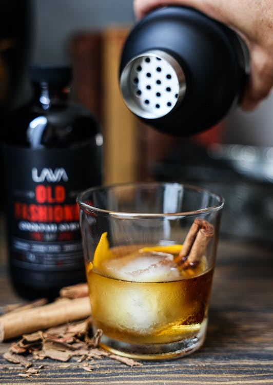

Old Fashioned Cocktail

Sip on the timeless elegance of an Old Fashioned, a classic cocktail that never goes out of style.
It's a sophisticated blend of sugar, bitters, and whiskey, typically garnished with a cherry and an orange twist. The sweetness of the sugar perfectly balances the heat of the whiskey, while the bitters add complexity. It's the perfect cocktail to unwind with at the end of a long day.
- 1 sugar cube
- 2-3 dashes Angostura bitters
- 2 ounces bourbon or rye whiskey
- Orange twist, for garnish
- Maraschino cherry, for garnish
- Place the sugar cube at the bottom of an Old Fashioned glass.
- Sprinkle the sugar cube with the Angostura bitters.
- Muddle these together until the sugar has mostly dissolved.
- Add in the whiskey and stir well to combine and further dissolve the sugar.
- Add a large ice cube or a few smaller ones, then give the cocktail another quick stir.
- Garnish with an orange twist and a maraschino cherry.
- Serve immediately and enjoy the warm, complex flavors of your homemade Old Fashioned cocktail.
Back Home